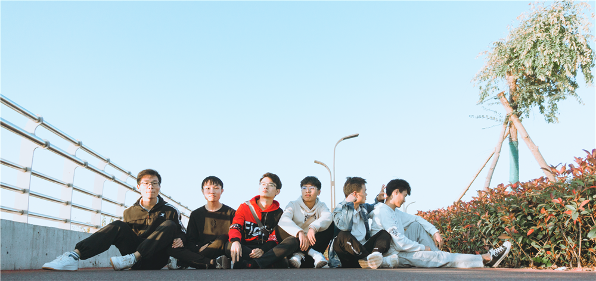

张嗣龙👦
🏣 安徽新华学院
📅 2019年09月 - 2022年06月 🏫 计算机应用技术 专科 大数据与人工智能学院
📅 2022年09月 - 2024年06月 🏫 计算机科学与技术 本科 大数据与人工智能学院
homepage是一个个人静态主页，用来介绍我自己的~
使用原生 HTML、CSS、JavaScript 开发
messageWall是一个留言墙项目，使用servlet+jsp组合开发，是我学习servlet后的第一个项目，梦开始的地方
前端使用原生 HTML、CSS、JavaScript开发，后端使用 jsp、servlet 开发
多人在线聊天室，使用 socket 进行通讯，使用 servlet + Mybatis 开发
这是我学习完 Spring、SpringMVC后开发的一个项目，使用SSM框架，目前还在开发中
- 学生、老师、管理员角色，不同用户有不同的操作权限
- 前端使用 layui 开发
- 后端使用 Spring + SpringMVC + Mybatis 进行开发
- 数据库使用 MySQL
- 可以创建、修改、发布作业，学生提交作业、撤回作业，对数据进行可视化统计
- 学生、老师、管理员角色，不同用户有不同的操作权限
- 前端使用 layui 开发
- 后端使用 Servlet + Mybatis 进行开发
- 数据库使用 MySQL
- 存储使用阿里云OSS存储
Captcha 是一个验证码生成的工具，可以很方便的生成验证码，所有的配置项都有默认值，开箱即用。
青志联
护校队
技能/证书及其他
在平时没课的时候，或者在寒暑假，就会去自学新的知识，当然，我已经树立了学习方向，主要是Javaweb方面，所以会去自学相关的知识，从2020年开始，先后学习了
喜欢在学习的时候进行笔记的记录，到现在也记录了很多的笔记，都会分享在CSDN上
经常会拿着相机去拍一些照片，或者拿着手机随手记录
